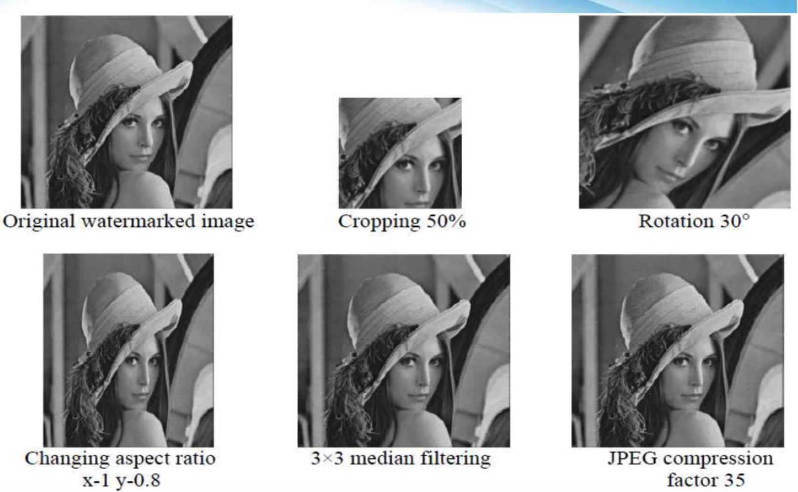

Yupei Zhu
A91095937
Introduction | How it works? | Things to consider | Is it safe? | How to crack it?
In the phyiscal world, watermarks is a prevailing method to discriminate original and fake. We can see watermarks on the paper money, on the boxes of luxury commodities and even on our Student IDs. Digital watermarking is a extension of this concept in the digital world. Basically, it is inserting some messages including files's copyright information into digital images, audios and videos. The main goal of digital watermarking is to make these messages irreplacable and non-removable. There are a lot of ways to conduct digital watermarking and I will go over the most basic two kinds of watermarking in this website: Visible Watermarking and Invisible Watermarking.
Visible Watermark
Visible watermarking is widely applied to photos and videos. It is simply embedding a logo or a sequence of words to the content. I will show a watermarked video below. It is an interview from Donald Trump and we can see a clear watermark of NBC's logo on the up-right corner.
Invisible Watermark
Invisible watermarking is that embedding some data to the source in a way that these changes cannot be detected by eyes or only the metadata of the contents is changed. Sometimes, people may think invisible watermarking is just steganography or cryptography. However, they are totally different. Steganography focuses more on making something cannot be detected and cryptography focuses more on protecting the data from being encrypted by unexpected person while invisible watermarking focuses more on making something cannot be replaced or removed. Below is a procedure of how a invisible watermark is applied to a picture.
Clearly, the watermarked picture has no difference with the original version. But if we compare the pixels one by one, we can still discover the discrepancy. An other effective way to perform invisible watermarking is to add metadata to the contents. Most camera will write information about the date, the name of arthor and the type of the camera to the photos. The following is a mp3 file with metadata embedded: (You can download it and use local fancy music player to open it. You will see the copyright information about it)